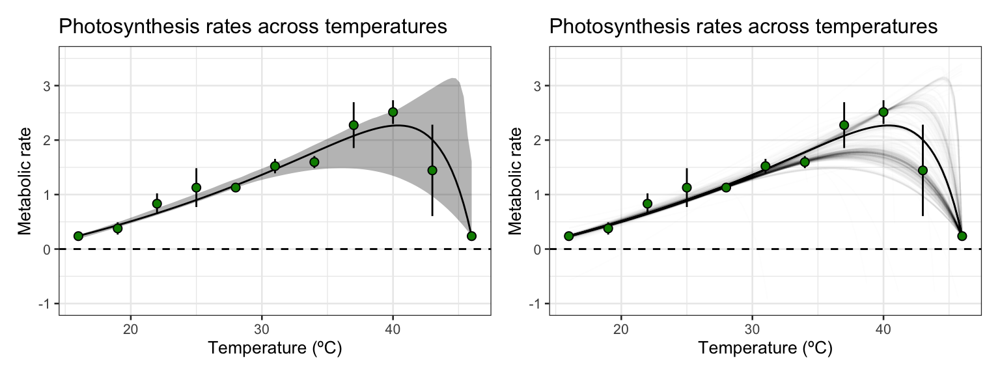

Bootstrapping with weights using rTPC
Daniel Padfield
2020-09-04
Source:vignettes/weighted_bootstrapping.Rmd
weighted_bootstrapping.RmdA brief example of how bootstrapping can be implemented alongside model weighting to account for model uncertainty alongside measurement uncertainty.
Things to consider
- Think carefully at about your level of replication
- Bootstrapping weighted regression models only makes sense using case resampling, not residual resampling
- See
vignette("bootstrapping_models")for examples of bootstrapping without weights - The outcomes of the different approaches outlined here are likely to change based on the data and the model used. Use this methods with caution and think critically about their output
# load packages library(boot) library(rTPC) library(nls.multstart) library(broom) library(tidyverse) library(patchwork)
When doing model weighting, as implemented in vignette(model_weighting), the standard deviation of each point that can be used to account for measurement uncertainty and change the model fit of the thermal performance curve. However, how this approach can be combined with bootstrapping is unclear. Here, we provide three possible approaches to bootstrapping when using weighted non-linear regression to fit thermal performance curves. They all use the data re-sampling.
- Re-sample each data point with a probability proportional to its weight and do weighted non-linear least squares regression on each bootstrapped dataset
- Re-sample each data point irrespective of its weight, but use weighted non-linear least squares regression on each bootstrapped dataset
- Re-sample each data point with a probability proportional to its weight and use standard non-linear least regression on each bootstrapped dataset
We will demonstrate these approaches using the example in vignette('model_weighting'). This vignette uses the example dataset contained within rTPC - a dataset of 60 TPCs of respiration and photosynthesis of the aquatic algae, Chlorella vulgaris. Instead of plotting a single curve, we average over the biological replicates, rep, within a growth temperature (here photosynthesis from cultures adapted to 33 ºC), to get mean rate values at each assay temperature and their standard deviation. These are then plotted using ggplot2. Instead of fitting kamykowski_1985, we will instead fit lactin2_1995 in this example.
The use of weights in Boot() is currently not supported, so I shall demonstrate how to write a very simple function to pass directly to boot() for the bootstrapping approaches.
# get curve data data("chlorella_tpc") d_ave <- filter(chlorella_tpc, process == 'adaptation', growth_temp == 33, flux == 'photosynthesis') %>% group_by(temp, flux) %>% summarise(., sd = sd(rate), ave_rate = mean(rate)) %>% ungroup() #> `summarise()` regrouping output by 'temp' (override with `.groups` argument) d_fit <- nest(d_ave, data = c(temp, ave_rate, sd)) %>% mutate(weighted = map(data, ~nls_multstart(ave_rate~lactin2_1995(temp = temp, a, b, tmax, delta_t), data = .x, iter = c(3,3,3,3), start_lower = get_start_vals(.x$temp, .x$ave_rate, model_name = 'lactin2_1995') - 10, start_upper = get_start_vals(.x$temp, .x$ave_rate, model_name = 'lactin2_1995') + 10, lower = get_lower_lims(.x$temp, .x$ave_rate, model_name = 'lactin2_1995'), upper = get_upper_lims(.x$temp, .x$ave_rate, model_name = 'lactin2_1995'), supp_errors = 'Y', convergence_count = FALSE, # include weights here! modelweights = 1/sd))) # get predictions using augment newdata <- tibble(temp = seq(min(d_ave$temp), max(d_ave$temp), length.out = 100)) d_preds <- d_fit %>% mutate(., preds = map(weighted, augment, newdata = newdata)) %>% select(-weighted) %>% unnest(preds) # plot ggplot() + geom_line(aes(temp, .fitted), d_preds) + geom_linerange(aes(x = temp, ymin = ave_rate - sd, ymax = ave_rate + sd), d_ave) + geom_point(aes(temp, ave_rate), d_ave, size = 2, shape = 21, fill = 'green4') + theme_bw(base_size = 12) + theme(legend.position = 'none', strip.text = element_text(hjust = 0), strip.background = element_blank()) + labs(x ='Temperature (ºC)', y = 'Metabolic rate', title = 'Photosynthesis rates across temperatures') + geom_hline(aes(yintercept = 0), linetype = 2) + ylim(c(-0.25, 3.5))

Method 1: Weighted re-sampling and weighted regression
This method re-samples new datasets where each point is sampled proportionally to its standard deviation. Weighted non-linear least squares regression is then implemented on each bootstrapped dataset.
First we will create the re-sampled bootstrapped datasets. We will use probability weighting for the re-sampled data according to the relative sizes of the standard deviation, \(\sigma\). We calculate this for each data point, \(i\), as
\[\frac{\frac{1}{\sigma_i}}{\sum\limits_{i=1}^{n}\frac{1}{\sigma_i}}\] where \(n\) is the number of data points. We can pass an argument to boot() for a vector of weights when resampling, so we will create this column and then feed it into our bootstrapping procedure. We will also refit the model using nlsLM() and their weights argument as in vignette(bootstrapping_models). However, we will write our own function to pass to boot() as car::Boot() does not currently support non-linear least squares regression.
The function just refits a model to resampled data. I wrapped the nlsLM() call in a tryCatch() argument so boot() does not fail when one of the bootstraps fails to converge. In these instances, we just return NA, so we can calculate how many samples fail to converge. A TRUE/FALSE argument controls whether we want to do weighted non-linear least squares regression or not.
We can check to see whether the model is doing the correct thing on the actual data by asking it to refit the model on the original dataset.
# create column for probability of resampling d_ave <- mutate(d_ave, inv_sd = 1/sd, prob = inv_sd/sum(inv_sd)) # refit model using nlsLM fit_nlsLM <- minpack.lm::nlsLM(ave_rate~lactin2_1995(temp = temp, a, b, tmax, delta_t), data = d_ave, start = coef(d_fit$weighted[[1]]), lower = get_lower_lims(d_ave$temp, d_ave$ave_rate, model_name = 'lactin2_1995'), upper = get_upper_lims(d_ave$temp, d_ave$ave_rate, model_name = 'lactin2_1995'), weights = 1/sd) # write function to pass to boot # doing weighted non-linear least squares regression boot_nlsLM <- function(sample_data, indices, start_vals, weighted_nls = TRUE){ # create subsampled data temp_data <- sample_data[indices, ] model = NULL output = NULL # re run model if(isTRUE(weighted_nls)){ model <- tryCatch(suppressWarnings(minpack.lm::nlsLM(ave_rate~lactin2_1995(temp = temp, a, b, tmax, delta_t), data = temp_data, start = start_vals, lower = get_lower_lims(temp_data$temp, temp_data$ave_rate, model_name = 'lactin2_1995'), upper = get_upper_lims(temp_data$temp, temp_data$ave_rate, model_name = 'lactin2_1995'), weights = 1/sd)), error = function(e) NULL) } # re run model if(isFALSE(weighted_nls)){ model <- tryCatch(suppressWarnings(minpack.lm::nlsLM(ave_rate~lactin2_1995(temp = temp, a, b, tmax, delta_t), data = temp_data, start = start_vals, lower = get_lower_lims(temp_data$temp, temp_data$ave_rate, model_name = 'lactin2_1995'), upper = get_upper_lims(temp_data$temp, temp_data$ave_rate, model_name = 'lactin2_1995'))), error = function(e) NULL) } if(is.null(model)){ output <- start_vals output[1:length(output)] <- NA } if(!is.null(model)){ output <- coef(model) } return(output) } # check to see it returns the same thing on the original data boot_nlsLM(d_ave, 1:nrow(d_ave), start_vals = coef(fit_nlsLM), weighted_nls = TRUE) #> a b tmax delta_t #> 0.03539109 -1.52100117 47.20966961 2.60222769 coef(fit_nlsLM) #> a b tmax delta_t #> 0.03539109 -1.52100117 47.20966961 2.60222769 # yep this seems to work
The results are identical! We will use boot() to do the weighted case resampling bootstrap using weighted non-linear least squares regression. We include a weights argument to boot() to allow weighted resampling (the smaller the standard deviation of the point, the more likely it will be resampled). We can then create model predictions for each bootstrap and confidence intervals of model predictions using the methods implemented in vignette(bootstrapping_models)
# bootstrap using weighted case resampling boot1 <- boot::boot(data = d_ave, statistic = boot_nlsLM, R = 999, weights = d_ave$prob, start_vals = coef(fit_nlsLM), weighted_nls = TRUE) colnames(boot1$t) <- names(coef(fit_nlsLM)) # check how many samples converged sum(!is.na(boot1$t))/length(boot1$t) * 100 #> [1] 53.45345 # predict over new data boot1_preds <- boot1$t %>% as.data.frame() %>% drop_na() %>% mutate(iter = 1:n()) %>% group_by_all() %>% do(data.frame(temp = seq(min(d_ave$temp), max(d_ave$temp), length.out = 100))) %>% ungroup() %>% mutate(pred = lactin2_1995(temp, a, b, tmax, delta_t)) # calculate bootstrapped confidence intervals boot1_conf_preds <- group_by(boot1_preds, temp) %>% summarise(conf_lower = quantile(pred, 0.025), conf_upper = quantile(pred, 0.975), .groups = 'drop')
We can then plot these predictions using ggplot2.
# plot bootstrapped CIs p1 <- ggplot() + geom_line(aes(temp, .fitted), d_preds, col = 'black') + geom_ribbon(aes(temp, ymin = conf_lower, ymax = conf_upper), boot1_conf_preds, fill = 'black', alpha = 0.3) + geom_linerange(aes(x = temp, ymin = ave_rate - sd, ymax = ave_rate + sd), d_ave) + geom_point(aes(temp, ave_rate), d_ave, size = 2, shape = 21, fill = 'green4') + theme_bw(base_size = 10) + theme(legend.position = 'none', strip.text = element_text(hjust = 0), strip.background = element_blank()) + labs(x ='Temperature (ºC)', y = 'Metabolic rate', title = 'Photosynthesis rates across temperatures') + geom_hline(aes(yintercept = 0), linetype = 2) + ylim(c(-1, 3.5)) # plot bootstrapped predictions p2 <- ggplot() + geom_line(aes(temp, .fitted), d_preds, col = 'black') + geom_line(aes(temp, pred, group = iter), boot1_preds, col = 'black', alpha = 0.007) + geom_linerange(aes(x = temp, ymin = ave_rate - sd, ymax = ave_rate + sd), d_ave) + geom_point(aes(temp, ave_rate), d_ave, size = 2, shape = 21, fill = 'green4') + theme_bw(base_size = 10) + theme(legend.position = 'none', strip.text = element_text(hjust = 0), strip.background = element_blank()) + labs(x ='Temperature (ºC)', y = 'Metabolic rate', title = 'Photosynthesis rates across temperatures') + geom_hline(aes(yintercept = 0), linetype = 2) + ylim(c(-1, 3.5)) p1 + p2

Method 2: Unweighted re-sampling and weighted regression
This method resamples new datasets while ignoring the standard deviations of each point, but uses weighted regression on each resampled bootstrapped dataset. So this time we just omit the weights argument from the call to boot().
# bootstrap using case resampling, but do weighted nls boot2 <- boot::boot(data = d_ave, statistic = boot_nlsLM, R = 999, start_vals = coef(fit_nlsLM), weighted_nls = TRUE) colnames(boot2$t) <- names(coef(fit_nlsLM)) # check how many samples converged sum(!is.na(boot2$t))/length(boot2$t) * 100 #> [1] 68.16817 # 53% - not fantastic: can always run more # predict over new data boot2_preds <- boot2$t %>% as.data.frame() %>% drop_na() %>% mutate(iter = 1:n()) %>% group_by_all() %>% do(data.frame(temp = seq(min(d_ave$temp), max(d_ave$temp), length.out = 100))) %>% ungroup() %>% mutate(pred = lactin2_1995(temp, a, b, tmax, delta_t)) # calculate bootstrapped confidence intervals boot2_conf_preds <- group_by(boot2_preds, temp) %>% summarise(conf_lower = quantile(pred, 0.025), conf_upper = quantile(pred, 0.975), .groups = 'drop') # plot bootstrapped CIs p1 <- ggplot() + geom_line(aes(temp, .fitted), d_preds, col = 'black') + geom_ribbon(aes(temp, ymin = conf_lower, ymax = conf_upper), boot2_conf_preds, fill = 'black', alpha = 0.3) + geom_linerange(aes(x = temp, ymin = ave_rate - sd, ymax = ave_rate + sd), d_ave) + geom_point(aes(temp, ave_rate), d_ave, size = 2, shape = 21, fill = 'green4') + theme_bw(base_size = 10) + theme(legend.position = 'none', strip.text = element_text(hjust = 0), strip.background = element_blank()) + labs(x ='Temperature (ºC)', y = 'Metabolic rate', title = 'Photosynthesis rates across temperatures') + geom_hline(aes(yintercept = 0), linetype = 2) + ylim(c(-5, 3.5)) # plot bootstrapped predictions p2 <- ggplot() + geom_line(aes(temp, .fitted), d_preds, col = 'black') + geom_line(aes(temp, pred, group = iter), boot2_preds, col = 'black', alpha = 0.007) + geom_linerange(aes(x = temp, ymin = ave_rate - sd, ymax = ave_rate + sd), d_ave) + geom_point(aes(temp, ave_rate), d_ave, size = 2, shape = 21, fill = 'green4') + theme_bw(base_size = 10) + theme(legend.position = 'none', strip.text = element_text(hjust = 0), strip.background = element_blank()) + labs(x ='Temperature (ºC)', y = 'Metabolic rate', title = 'Photosynthesis rates across temperatures') + geom_hline(aes(yintercept = 0), linetype = 2) + ylim(c(-3, 3.5)) p1 + p2
 In this instance, the unweighted case resampling method gives really wide confidence intervals for the model predictions at high temperatures. When the 49 ºC temperature is not present in the resampled data, the curve fits very differently. This is likely a problem with most models that allow for negative rates, whereas those that do not may not have the problem as much because the mathematical formulation forces rates to always be positive.
In this instance, the unweighted case resampling method gives really wide confidence intervals for the model predictions at high temperatures. When the 49 ºC temperature is not present in the resampled data, the curve fits very differently. This is likely a problem with most models that allow for negative rates, whereas those that do not may not have the problem as much because the mathematical formulation forces rates to always be positive.
Method 3: Weighted re-sampling and standard non-linear least squares regression
This method re-samples each data point with a probability proportional to its weight and use standard non-linear least regression on each bootstrapped dataset. We can do this easily by switched weighted_nls to FALSE inside our custom boot_nlsLM() function.
# bootstrap using weighted case resampling, do standard nls boot3 <- boot::boot(data = d_ave, statistic = boot_nlsLM, R = 999, weights = d_ave$prob, start_vals = coef(fit_nlsLM), weighted_nls = FALSE) colnames(boot3$t) <- names(coef(fit_nlsLM)) # check how many samples converged sum(!is.na(boot3$t))/length(boot3$t) * 100 #> [1] 59.65966 # 53% - not fantastic: can always run more # predict over new data boot3_preds <- boot3$t %>% as.data.frame() %>% drop_na() %>% mutate(iter = 1:n()) %>% group_by_all() %>% do(data.frame(temp = seq(min(d_ave$temp), max(d_ave$temp), length.out = 100))) %>% ungroup() %>% mutate(pred = lactin2_1995(temp, a, b, tmax, delta_t)) # calculate bootstrapped confidence intervals boot3_conf_preds <- group_by(boot3_preds, temp) %>% summarise(conf_lower = quantile(pred, 0.025), conf_upper = quantile(pred, 0.975), .groups = 'drop') # plot bootstrapped CIs p1 <- ggplot() + geom_line(aes(temp, .fitted), d_preds, col = 'black') + geom_ribbon(aes(temp, ymin = conf_lower, ymax = conf_upper), boot3_conf_preds, fill = 'black', alpha = 0.3) + geom_linerange(aes(x = temp, ymin = ave_rate - sd, ymax = ave_rate + sd), d_ave) + geom_point(aes(temp, ave_rate), d_ave, size = 2, shape = 21, fill = 'green4') + theme_bw(base_size = 10) + theme(legend.position = 'none', strip.text = element_text(hjust = 0), strip.background = element_blank()) + labs(x ='Temperature (ºC)', y = 'Metabolic rate', title = 'Photosynthesis rates across temperatures') + geom_hline(aes(yintercept = 0), linetype = 2) + ylim(c(-5, 3.5)) # plot bootstrapped predictions p2 <- ggplot() + geom_line(aes(temp, .fitted), d_preds, col = 'black') + geom_line(aes(temp, pred, group = iter), boot3_preds, col = 'black', alpha = 0.007) + geom_linerange(aes(x = temp, ymin = ave_rate - sd, ymax = ave_rate + sd), d_ave) + geom_point(aes(temp, ave_rate), d_ave, size = 2, shape = 21, fill = 'green4') + theme_bw(base_size = 10) + theme(legend.position = 'none', strip.text = element_text(hjust = 0), strip.background = element_blank()) + labs(x ='Temperature (ºC)', y = 'Metabolic rate', title = 'Photosynthesis rates across temperatures') + geom_hline(aes(yintercept = 0), linetype = 2) + ylim(c(-3, 3.5)) p1 + p2